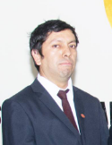

 alt="Lalo">
No Os Llevéis Por La Seriedad
Web Master
La seriedad en la fotito solo es para ello, "la fotito", pues tras este "cover" [por decirlo en los mismos términos tecnológicos que él se mueve], es un tipo genuinamente carismático. Es el tipo más centrado de la familia, y por supuesto, nuestro web master, iniciador y encaminador en todas estas yerbitas digitales. El sí en verdad es todo un "web master" no como otros [bueno a quién engaño...solo YO] que recién llegan y aprenden algún comandito ya se creen todos unos expertos.
Details